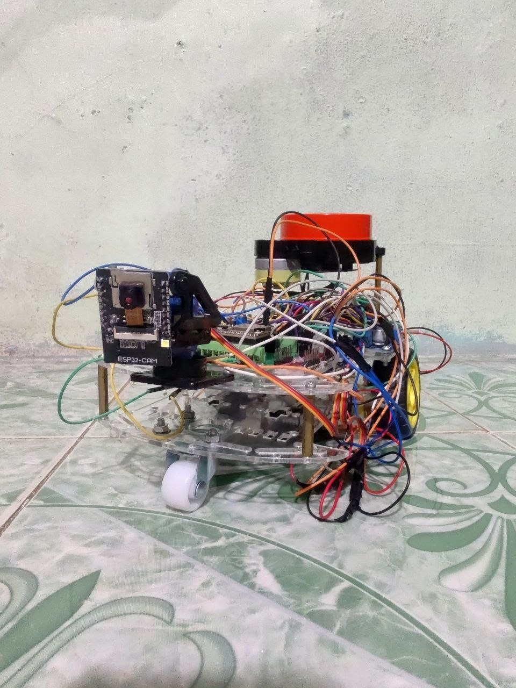

Khám phá bản đồ • Điều hướng tự động • Theo dõi người
SLAM Toolbox xây dựng bản đồ từ LiDAR + explore_lite tự động di chuyển đến vùng chưa khám phá
Nav2 Stack: AMCL định vị + NavFn lập đường đi + DWB điều khiển bám đường
YOLOv8n + InsightFace nhận dạng, Camera-LiDAR fusion định vị, PID 3 tầng điều khiển

| Module | Publish | Subscribe |
|---|---|---|
| motors | — | /cmd_vel |
| encoders | /odom | — |
| imu | /imu/data_raw | — |
| lidar | /scan | — |
| servos | /joint_states | /servo_cmd |
| safety | Watchdog: dừng motor khi mất agent | |
| ros_bridge | Interface chung các module | |
Phát luồng MJPEG qua HTTP :80
Không phải micro-ROS node
cam_bridge_node kéo dữ liệu về ROS
Ước lượng phép biến đổi giữa 2 bản quét LiDAR liên tiếp bằng phương pháp correlative scan matching kết hợp tối ưu phi tuyến Ceres Solver.
Khi robot quay lại vùng đã khám phá, thuật toán phát hiện trùng lặp và hiệu chỉnh sai số tích lũy qua tối ưu toàn cục đồ thị tư thế.
| Tham số | Giá trị |
|---|---|
| Chuỗi scan tối thiểu | 10 |
| Ngưỡng matching thô | ≥ 0.35 |
| Ngưỡng matching tinh | ≥ 0.45 |
| Variance tối đa (thô) | ≤ 3.0 |
Cập nhật mỗi 5 giây. Mỗi ô chứa xác suất chiếm đóng từ 0 (trống) đến 100 (vật cản).
Robot tự động tìm và di chuyển đến các biên giới — ranh giới giữa vùng đã biết và chưa biết — để khám phá toàn bộ môi trường.
| Trọng số | Giá trị | Ý nghĩa |
|---|---|---|
| α (gain_scale) | 0.8 | Ưu tiên biên giới lớn |
| β (potential_scale) | 5.0 | Ưu tiên biên giới gần |
| γ (orientation_scale) | 0.0 | Bỏ qua góc quay |
Sử dụng 500–2000 hạt (particles) để ước lượng vị trí robot. Số lượng hạt tự điều chỉnh dựa trên KL-divergence.
| Tham số | Giá trị |
|---|---|
| Số hạt tối thiểu | 500 |
| Số hạt tối đa | 2000 |
| Mô hình cảm biến | Likelihood field |
| Số tia laser sử dụng | 180 / 360 |
Vùng đệm 45cm quanh vật cản, bán kính robot 12cm
Mô phỏng 1600 quỹ đạo (40×40 mẫu) trong 1.2 giây, chấm điểm bằng 7 critics.
| Critic | Scale |
|---|---|
| RotateToGoal | 32.0 |
| PathAlign | 20.0 |
| PathDist | 20.0 |
| GoalAlign | 16.0 |
| GoalDist | 16.0 |
| BaseObstacle | 0.05 |
Camera cho hướng (bearing) nhưng không biết khoảng cách. LiDAR biết khoảng cách nhưng không phân biệt người. Kết hợp: bearing từ camera + range từ LiDAR cone.
fx = width / (2 × tan(FOV/2)), FOV = 62°
Chuyển bearing từ camera_optical_frame sang laser_link (camera gắn trên servo pan → góc thay đổi liên tục)
| Tham số | Giá trị |
|---|---|
| Cone nửa góc | ±0.17 rad (~10°) |
| Range hợp lệ | 0.3 – 4.0 m |
| Phương pháp | min(valid_ranges) |
| Không có ray | range = NaN (bỏ qua) |
| Tầng PID | Tần số | Kp | Mục đích |
|---|---|---|---|
| Servo Pan | 50 Hz | 2.0 | Giữ target giữa khung hình |
| Wheel Yaw | 10 Hz | 0.5 | Quay body khi servo > 30° |
| Linear | 10 Hz | 0.3 | Giữ khoảng cách 0.15–0.25m |
Chiến lược "Servo-first, Wheel-second":
|servo| ≤ 0.52 rad (30°) → chỉ servo quay
|servo| > 0.52 rad → PID yaw xoay robot + kéo servo về center
An toàn — Obstacle Arc Check:
LiDAR front arc ±0.35 rad (~20°), < 0.15m → block forward
| Chức năng | Thuật toán chính | Thư viện |
|---|---|---|
| Xây dựng bản đồ | Graph-based SLAM, Ceres Solver | SLAM Toolbox |
| Khám phá tự động | Frontier-based Exploration | explore_lite |
| Định vị | Adaptive Monte Carlo Localization | Nav2 AMCL |
| Lập đường đi | A* trên costmap | Nav2 NavFn |
| Bám đường | Dynamic Window Approach | Nav2 DWB |
| Phát hiện người | CNN one-stage detection | YOLOv8n |
| Nhận dạng mặt | ArcFace + Cosine similarity | InsightFace |
| Định vị người | Camera bearing + LiDAR cone fusion | Custom (TF2) |
| Điều khiển | PID 3 tầng + FSM | Custom |